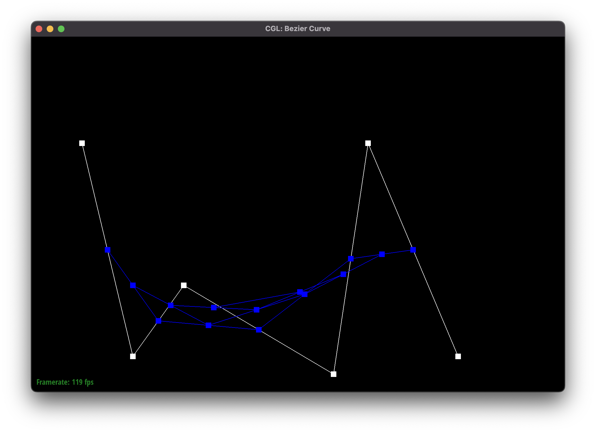
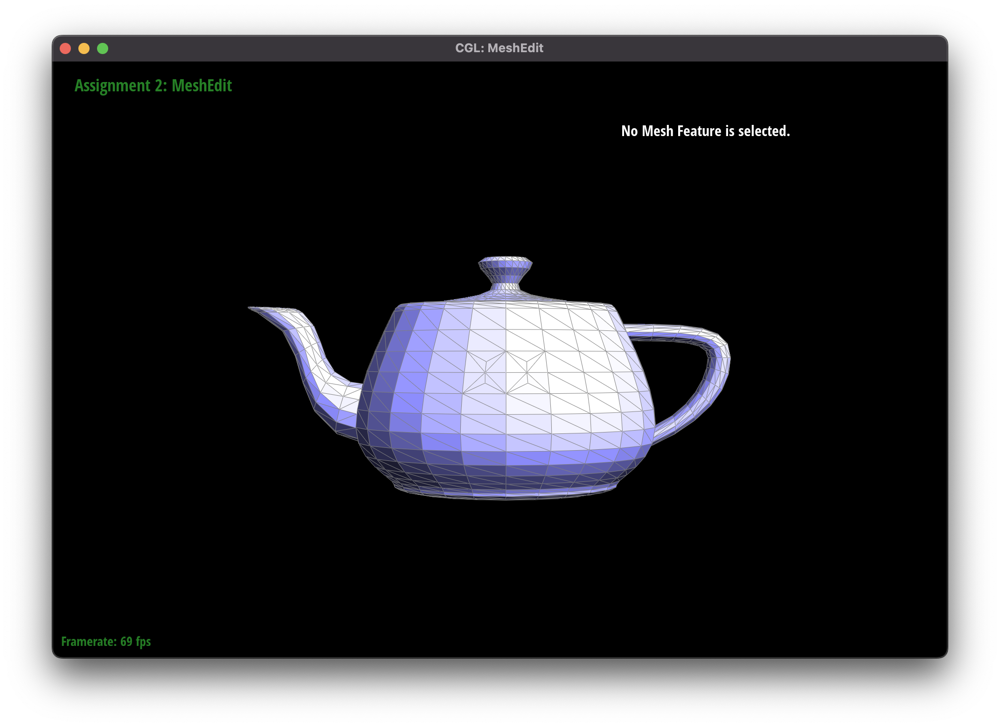

Overview
In project two, we build a toolkit that allows us to create increasingly complex renders with the simplest input possible. We first warm up by implementing de Casteljau's algorithm in 2D and in 3D in order to understand how a point is actually rendered to the screen. Our next tool, Phong shading via area-weighted vertex normals lets us simulate the lighting of a higher-poly model without the performance implications of actually increasing the poly count. Finally, we have mesh sampling via edge flips and edge splits. This tool lets us trade file size for processing requirements by storing a coarser mesh and then subdividing it until we reach our desired mesh fineness.
Most of the difficulty in this project came from the sheer complexity of trying to maintain the mesh's coherency while performing operations on it. The half-edge model, while powerful, gives a programmer many opportunities to introduce confusing errors. The best way to minimize time lost to debugging, we found, is to reason through how every half-edge interacts with every vertex, edge, and face before writing even a single line of code. By doing so, we were able to avoid any truly catastrophic debugging challenges.
Section I: Bezier Curves and Surfaces
Part 1: Bezier Curves with 1D de Casteljau Subdivision
Briefly explain de Casteljau's algorithm and how you implemented it in order to evaluate Bezier curves.
De Casteljau's algorithm lets us perform linear interpolation between the n control points of a Bezier curve to get a curve of n-1 control points. For every pair of control points i and i+1, we lerp with parameter t to find the location of the corresponding point in the new curve. Repeating the process until n=1 gives us a single point on the Bezier curve, and sliding from t=0.0 to t=1.0 will give us the full curve.
Take a look at the provided .bzc files and create your own Bezier curve with 6 control points of your choosing. Use this Bezier curve for your screenshots below.
Show screenshots of each step / level of the evaluation from the original control points down to the final evaluated point. Press E to step through. Toggle C to show the completed Bezier curve as well.
|
|
|
|
|

|
|

|
|
|
|
|
Show a screenshot of a slightly different Bezier curve by moving the original control points around and modifying the parameter \(t\) via mouse scrolling.
Part 2: Bezier Surfaces with Separable 1D de Casteljau
Briefly explain how de Casteljau algorithm extends to Bezier surfaces and how you implemented it in order to evaluate Bezier surfaces.
In part 1, we use de Casteljau's algorithm to evaluate a point \(t\) alone a Bezier curve. To extend this into an additional dimension, we nest the algorithm within itself. In other words, to evaluate a point \(u, v\) in a \(n \times n\) grid of control points, we find the point for parameter u for every row of \(n\) control points, then use those as control points for another iteration of de Casteljau's with parameter v. We can now repeat this for any \( u \in [0.0, 1.0], v \in [0.0, 1.0] \).
Show a screenshot of bez/teapot.bez (not .dae) evaluated by your implementation.

bez/teapot.bezSection II: Triangle Meshes and Half-Edge Data Structure
Part 3: Area-Weighted Vertex Normals
Briefly explain how you implemented the area-weighted vertex normals.
To traverse over the triangles surrounding a vertex starting from halfedge h, we do whatever processing we need on this face by fetching the halfedges h->next() and h->next()->next() and then move to a halfedge from the next triangle with h = h->next()->next()->twin(). We repeat this until h == start_h, which we store before starting the loop.
Within each iteration of the loop, we need to find vectors representing two edges of the triangle. We do this by subtracting the position of h->next() from h and h->next()->next() from h->next(). If we sum up the cross products of these vectors from each iteration of the loop and normalize the sum, we get the normal vector for that vertex.
Show screenshots of dae/teapot.dae (not .bez) comparing teapot shading with and without vertex normals. Use Q to toggle default flat shading and Phong shading.
dae/teapot.dae with flat shading |
dae/teapot.dae with Phong shading |
Part 4: Edge Flip
Briefly explain how you implemented the edge flip operation and describe any interesting implementation / debugging tricks you have used.
First we create pointers for every single EdgeIter, HalfedgeIter, VertexIter, and FaceIter in the two triangles connected to the EdgeIter e0 we are given. We start by updating the neighbors of all six HalfedgeIter, repurposing half_bc and half_cb as the two flipped half edges. After this, we simply need to update the halfedge() stored in every other EdgeIter, VertexIter, and FaceIter.
To avoid future distress when we actually go to run this code, we needed to prepare some sanity checks for the process of reassigning the half edges. These included: FaceIter f0 and FaceIter f1 should be referenced by three half edges each, every half edge should have the same vertex unless it is one of the two half edges that have been flipped, the twin() of any half edge should not change, the halfedge() of any edge should not change, and so on.
Show screenshots of the teapot before and after some edge flips.
dae/teapot.dae before edge flips |
dae/teapot.dae after edge flips |
Write about your eventful debugging journey, if you have experienced one.
Thanks to the rigorous sanity checks performed in the implementation stage, no debugging was necessary for this part!
Part 5: Edge Split
Briefly explain how you implemented the edge split operation and describe any interesting implementation / debugging tricks you have used.
The first step to implement edge splits is to draw a picture of two triangles that share a common edge. Then, we need to collect the vertices, faces, half edges, and edges that touch the two triangles. For the next step, we needed to create one new vertex, two new faces, six new half edges, and three new edges. In order to get the position for the half edges, we took the positions of the 2 vectors from e0 and averaged them. After finding the position for the half edges, we needed to reassign all of the objects including re-setting the neighbors for all the half edges, and reassigning all the edges.
Show screenshots of a mesh before and after some edge splits.
dae/teapot.dae before edge splits |
dae/teapot.dae after edge splits |
Show screenshots of a mesh before and after a combination of both edge splits and edge flips.
dae/teapot.dae before edge flips and splits |

dae/teapot.dae after edge flips and splits |
Write about your eventful debugging journey, if you have experienced one.
My debugging journey for this problem was a very eventful one. First, I made 2 basic mistakes with using one too many, and one two few next pointers. As a result, these were off for the entirety of the rest of the implementation. Next, I made many mistakes with setting the correct neighbors of the halfedge iterators, which caused me a significant amount of debugging later. Finally, I forgot to set the isNew property on the 2 new edges, even though it was mentioned in the project spec. Overall, I made a lot of tiny mistakes that took quite a bit of my time.
Part 6: Loop Subdivision for Mesh Upsampling
Briefly explain how you implemented the loop subdivision and describe any interesting implementation / debugging tricks you have used.In order to implement loop subdivision, we first needed to loop through all of the vertices and mark all of the vertice’s isNew property to false in order to establish that it is a vertex that was part of the original mesh. Then, we calculate the position with the formula provided in project spec, and set the newPosition property of the vertex to the calculated new position. Then, we needed to split all of the edges in the mesh. We first loop through all of the edges that we stored in the vector from the previous loop, and call the splitEdge method and pass in the edge. We then use the formula provided in the project spec, and assign this new calculated position in the newPosition attribute. For the next step, we need to iterate through the vector that holds all of the edges and split edges, setting the vertex from the edge split to new. Finally, we iterate through all of the edges and flop any edge that is connecting an old and new vertice. Then, we copy the positions for the newPositions field back into the positions field, and that concludes the process of sampling.
Take some notes, as well as some screenshots, of your observations on how meshes behave after loop subdivision. What happens to sharp corners and edges? Can you reduce this effect by pre-splitting some edges?
When we sample, the vertices and edges that are hard become softened. Therefore, for areas that have more splits, they will become smoother. If we were to pre-split some edges, then the edge would be sharper after upsampling.
dae/torus/input.dae
dae/torus/input.dae after 4 loop subdivisions |

dae/torus/input.dae after 4 loop subdivisions, pre-split |
As these screenshots demonstrate, by pre-splitting the edges of dae/torus/input.dae we are able to preserve the hexagonal shape at the center of the model.
Load dae/cube.dae. Perform several iterations of loop subdivision on the cube. Notice that the cube becomes slightly asymmetric after repeated subdivisions. Can you pre-process the cube with edge flips and splits so that the cube subdivides symmetrically? Document these effects and explain why they occur. Also explain how your pre-processing helps alleviate the effects.
dae/cube.dae |
dae/cube.dae after 1 loop subdivision |
dae/cube.dae after 2 loop subdivision2 |
dae/cube.dae after 3 loop subdivisions |
The original triangles in the original mesh are asymmetric; therefore, when we divide the original triangles, then we will get asymmetric splits because the corners of the triangles are unevenly adjusted. We can avoid this asymmetry by first flipping edges and then subdividing, then the model would become symmetric.
dae/cube.dae after a few subdivisions where the triangles in the front are larger than the triangles on the side |
This writeup is also available at https://mcfdyn.github.io/cs184-writeups/proj2/index.html.